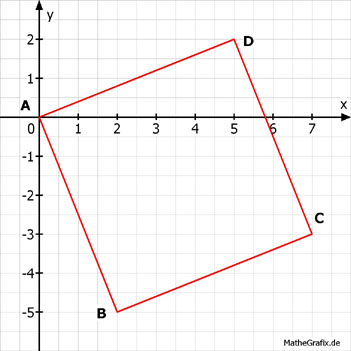

Lineare Funktionen Aufgabe 81 Handelt es sich bei dem Viereck ABCD um ein Parallelogramm, ein Trapez oder um keins von beiden? A(0|0); B(2|-5); C(7|-3); D(5|2).  A(0|0) x1 y1 D(5|2) x2 y2 2 - 0 mAD = -------- = 0,4 5 - 0 B(2|-5) x1 y1 C(7|-3) x2 y2 -3 - (-5) 2 mBC = ----------- = --- = 0,4 7 - 2 5 mAD = mBC, damit liegen AD und BC parallel. A(0|0) x1 y1 B(2|-5) x2 y2 -5 - 0 mAB = -------- = - 2,5 2 - 0 C(7|-3) x1 y1 D(5|2) x2 y2 2 - (-3) 5 mCD = ----------- = ---- = -2,5 5 - 7 -2 mAB = mCD, damit liegen AB und CD parallel Somit ist das Viereck ABCD ein Parallelogramm.